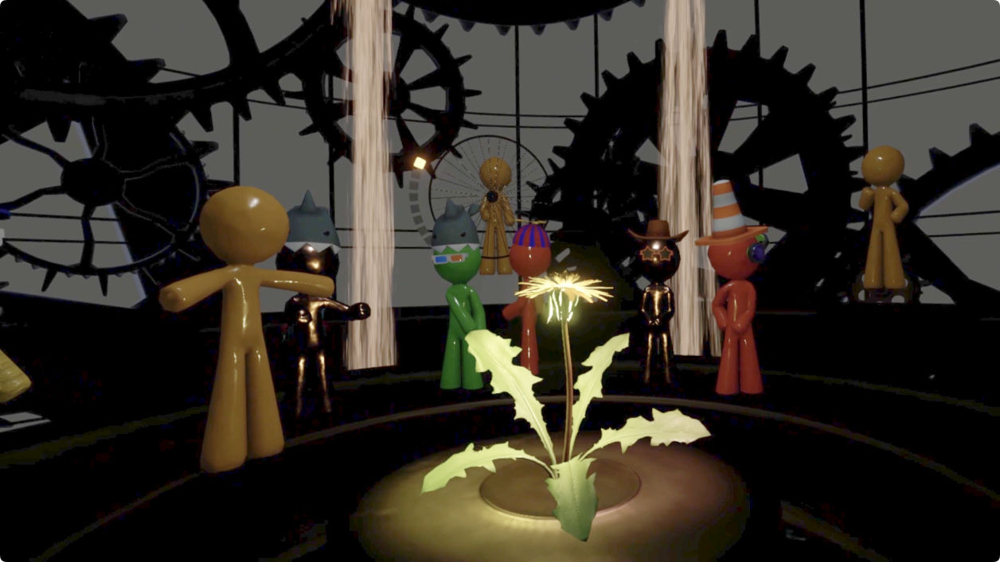
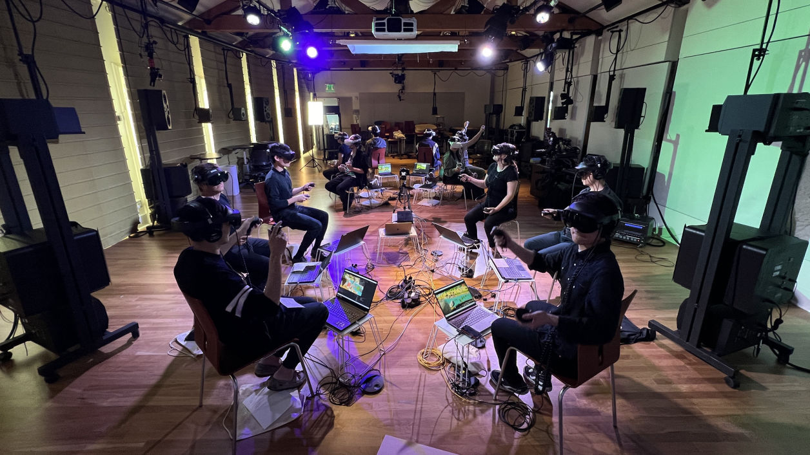
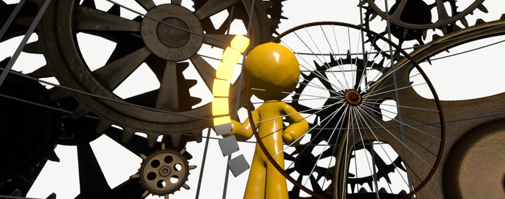
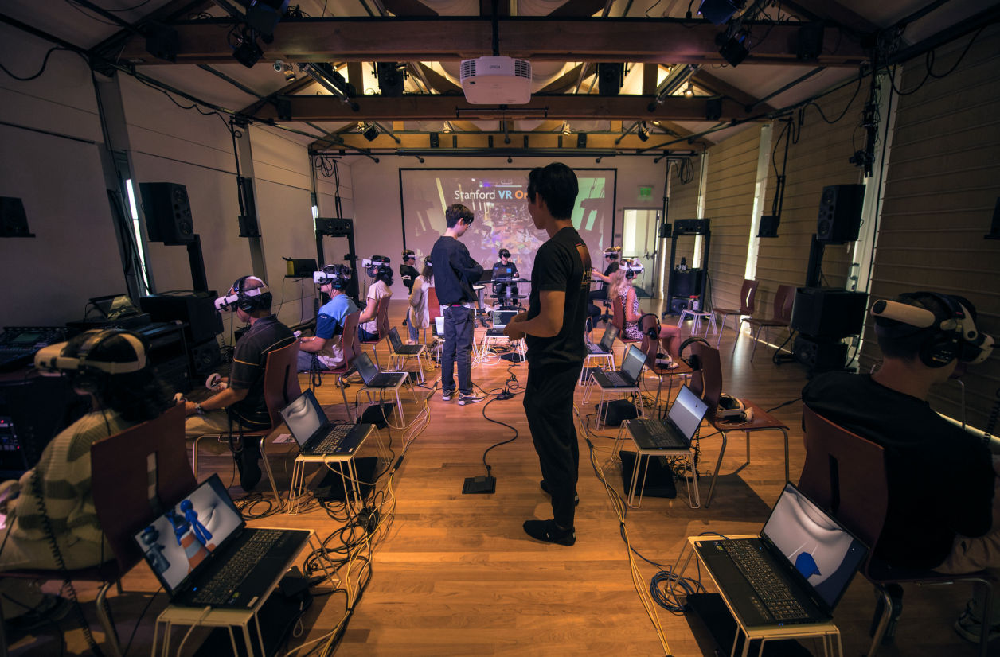
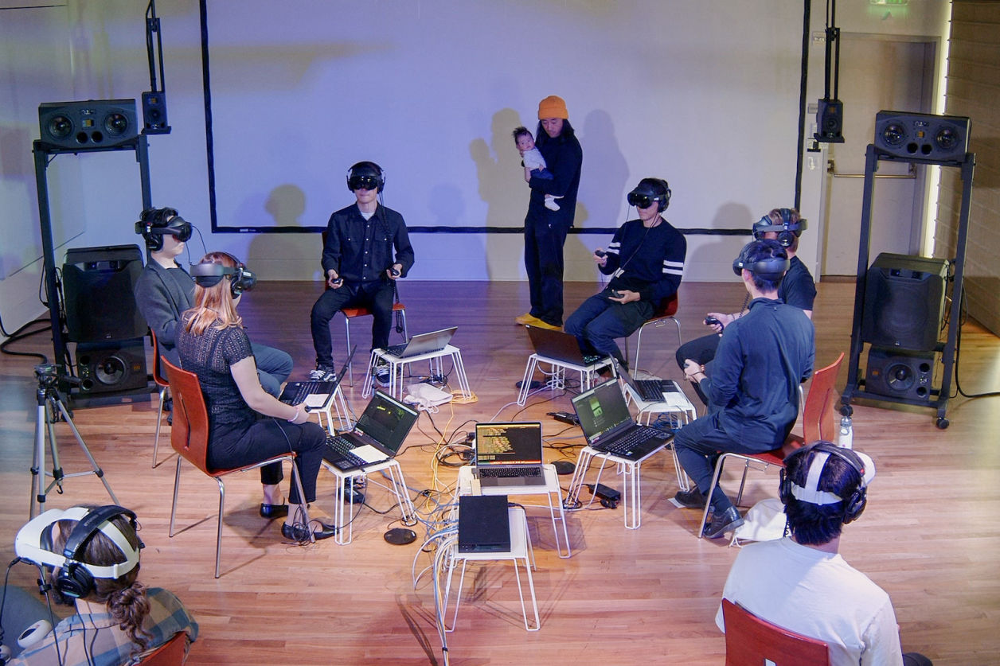

Located in the Reality Room at Stanford's CCRMA, the Stanford VR Design Lab conducts research in the artful design of virtual, augmented, and mixed reality (VR, AR, XR) for human creative expression. The output includes tools for computer music-based VR design, creation of VR experiences where audio plays a central role, virtual field trips, and Stanford VR Orchestra. Our research questions include:
• What does it mean to design artfully in the medium?
• What new musical instruments and interactions are possible?
• What does it mean to perform in virtual reality?
• How might we play music socially in a virtual space?
• How might we design virtual environments that encourage play, stillness, and calm?
• What new experiences can we craft for artful, interactive, multi-modal storytelling?
• What are VR's artistic, philosophical, humanistic implications?
• How to design new tools for expressive VR?
This video explores the what, the why, and the how of works in the VR Design Lab, and showcases a number of projects from the Lab. Output from the VR Design Lab includes new VR tools, artistic works, virtual field trip, and works from an experimental VR Orchestra (sVoRk).
Learn more about VR Design Lab research
Jack Atherton and Ge Wang. 2020. "Doing vs. Being: A Philosophy of Design for Artful VR." Journal of New Music Research. 49(1):35-59. article (PDF) | project webpage
Jack Atherton and Ge Wang. 2018. "Chunity: Integrated Audiovisual Programming in Unity." New Interfaces for Musical Expression. paper (PDF) | video | Chunity site
Kunwoo Kim and Ge Wang. 2024. "VVRMA: VR Field Trip to a Computer Music Center." New Interface for Musical Expression. paper (PDF) | (Project VVRMA was made possible by a generous Virtual Field Trip grant from Stanford Accelerator for Learning and the Graduate School of Education)
Kim. K. and G. Wang. 2024. “MIDI.CITI: Designing an Experience-oriented Musical Cityscape.” International Computer Music Conference.
(Ph.D. Thesis) Jack Atherton. 2018. Tool-building for Amateur Creativity in Virtual Reality. Department of Music, Stanford University.
(Ph.D. Thesis) Kunwoo Kim. 2025. Humanistic Tool-building in Virtual Reality: An Audio-driven Approach. Department of Music, Stanford University.
(VR video recording) Project VVRMA: Zone of Interest 1 "From Sound to Brain" is a first-person interactive journey through the human auditory system.
(VR video recording) Project VVRMA: Zone of Interest 2 "The Musical City" is a playable musical city in VR, as well as a space for contemplating what we value in our lives.
The Stanford VR Orchestra (SVOrk) is an orchestra where both performers and audience engage in a shared virtual reality concert space. The first ensemble of its kind, SVOrk offers fantastical worlds of whales, cityscapes, and inner-spaces to create musical experiences that can only exist in VR. In addition, SVOrk is a concert-going experience in VR, exploring the audience’s identity and new forms of expressive communication. This design borrows from real-world concert contexts: we dress up, wait in lobbies, chat with fellow listeners, engage with the concert, applaud, and reflect. In SVOrk, the audience chooses their avatars, reads virtual program notes in waiting rooms, communicates nonverbally with other audience members, participates in a fantastical virtual performance environment situated within a physical-world social gathering.
Supported by a generous grant from the Stanford Graduate School of Education, SVOrk was an experiment in creating a virtual reality orchestra with custom virtual worlds, computer music VR instruments, and live performance works created specifically for the VR medium. SVOrk was originated with my Ph.D. student Kunwoo Kim, and comprised a significant component of Kunwoo's thesis in humanistic tool-building in VR. We created our own SVOrk toolkit in Chunity (ChucK in Unity) to build computer music-based audiovisual VR interactions. A group six dedicated graduate students labored over 18 months culminating in two experimental concerts and a world premiere in June 2024.
We approached this work with both curiosity and earnestness as well as earnest skepticism about whether a VR orchestra is overall beneficial, given the isolating nature of the medium of VR. The premiere concert turned out more wholesome than we had anticipated, where audiences felt a sense of connection with one another. Nonetheless, an informal finding of VR Orchestra is that we still don't know if this is "a good idea", and in any case we dearly hope that humans continue to come together to make music together in physical settings.
Learn more about VR Orchestra
Kunwoo Kim, Andrew Zhu Aday, Eito Murakami, Marise van Zyl, Yikai Li, Max Jardetzky, and Ge Wang. 2025. "SVOrk: Stanford Virtual Reality Orchestra." New Interfaces for Musical Expression.
Stanford VR Orchestra (SVOrk) World Premiere. June 1-2, 2024. CCRMA Stage, Stanford University. program notes | photo album

The "view" from within VR; players are identified by solid orange avatars; audiences customize their avatars and can freely experience each work and can engage in non-verbal communication through gestures.

The Stanford VR Orchestras performs in a networked VR setting where performers and audience virtually exist and interact in a shared setting.

A performer interacts with a virtual instrument resembling a bicycle wheel, within a massive cage of gears, symbolizing the technological surround.

At the VR Orchestra premiere in June 2024, two SVOrk "dossants" monitor a dozen laptops rendering and networking the VR headsets of audience members.

A ring of six performers in VR headsets
The VR Design Lab @ CCRMA gratefully acknowledges the Stanford Graduate School of Education's Stanford Accelerator for Learning for their generous Virtual Field Trip grant and guidance, and to Stanford Virtual Human Interaction Lab (VHIL) for their inspiration, collaboration, and friendship.